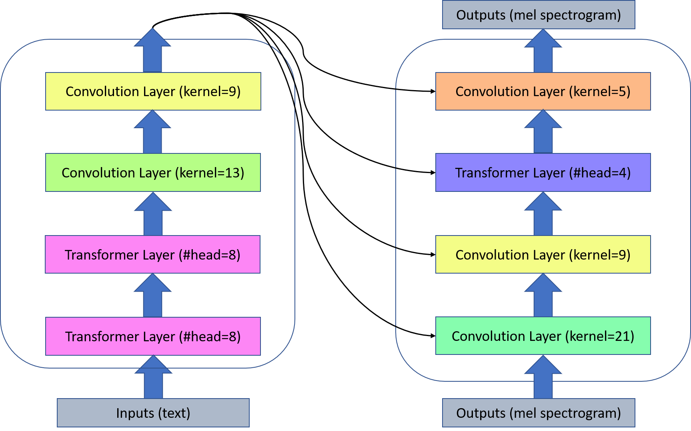

Semi-Supervised Neural Architecture Search
ArXiv: arXiv:2002.10389
Authors
- Renqian Luo (University of Science and Technology of China) lrq@mail.ustc.edu.cn
- Xu Tan (Microsoft Research) xuta@microsoft.com
- Rui Wang (Microsoft Research) ruiwa@microsoft.com
- Tao Qin (Microsoft Research) taoqin@microsoft.com
- Enhong Chen (University of Science and Technology of China) cheneh@ustc.edu.cn
- Tie-Yan Liu (Microsoft Research) tyliu@microsoft.com
Abstract
Neural architecture search (NAS) relies on a good controller to generate better architectures or predict the accuracy of given architectures. However, training the controller requires both abundant and high-quality pairs of architectures and their accuracy, while it is costly to evaluate an architecture and obtain its accuracy. In this paper, we propose SemiNAS, a semi-supervised NAS approach that leverages numerous unlabeled architectures (without evaluation and thus nearly no cost) to improve the controller. Specifically, SemiNAS 1) trains an initial controller with a small set of architecture-accuracy data pairs; 2) uses the trained controller to predict the accuracy of large amount of architectures~(without evaluation); and 3) adds the generated data pairs to the original data to further improve the controller. SemiNAS has two advantages: 1) It reduces the computational cost under the same accuracy guarantee. 2) It achieves higher accuracy under the same computational cost. On NASBench-101 benchmark dataset, it discovers a top 0.01% architecture after evaluating roughly 300 architectures, with only 1/7 computational cost compared with regularized evolution and gradient-based methods. On ImageNet, it achieves a state-of-the-art top-1 error rate of 23.5% (under the mobile setting) using 4 GPU-days for search. We further apply it to LJSpeech text to speech task and it achieves 97% intelligibility rate in the low-resource setting and 15% test error rate in the robustness setting, with 9%, 7% improvements over the baseline respectively.
Model Architecture
Low-Resource Setting
Robustness Setting

Audio Samples
All of the audio samples use Griffin-Lim as vocoder.
Low-Resource Setting
*The good it tried to do took active shape in the establishment of temporary refuges - at hoxton for males and in the hackney road for females
| GT(Griffin-Lim) | Transformer TTS | SemiNAS |
|---|---|---|
*But shall also tend more effectually to preserve the health
| GT(Griffin-Lim) | Transformer TTS | SemiNAS |
|---|---|---|
*Hired a room for the night and morning which he and a large party of friends occupied before and during the execution
| GT(Griffin-Lim) | Transformer TTS | SemiNAS |
|---|---|---|
*Every link in that great human chain is shaken along the whole lengthened line has the motion jarred and each in turn sees
| GT(Griffin-Lim) | Transformer TTS | SemiNAS |
|---|---|---|
*This phial he had managed to retain in his possession in spite of the frequent searches to which he was subjected in newgate
| GT(Griffin-Lim) | Transformer TTS | SemiNAS |
|---|---|---|
*No time was lost in carrying out the dread ceremony but it was not completed without some of the officials turning sick and the moment it was over
| GT(Griffin-Lim) | Transformer TTS | SemiNAS |
|---|---|---|
*No other employee has been found who saw oswald enter that morning
| GT(Griffin-Lim) | Transformer TTS | SemiNAS |
|---|---|---|
*Three months prior to his regularly scheduled separation date ostensibly to care for his mother who had been injured in an accident at her work
| GT(Griffin-Lim) | Transformer TTS | SemiNAS |
|---|---|---|
*Oswald’s activities with regard to cuba raise serious questions as to how much he might have been motivated in the assassination
| GT(Griffin-Lim) | Transformer TTS | SemiNAS |
|---|---|---|
*Lawson also in the lead car did not scan any buildings since an important part of his job was to look backward at the president’s car
| GT(Griffin-Lim) | Transformer TTS | SemiNAS |
|---|---|---|
Robustness Setting
*Allergic trouser.
| Transformer TTS | SemiNAS |
|---|---|
*Christmas is coming.
| Transformer TTS | SemiNAS |
|---|---|
*Nineteen twenty is when we are unique together until we realise we are all the same.
| Transformer TTS | SemiNAS |
|---|---|
Our Related Works
Neural Architecture Optimization
FastSpeech: Fast, Robust and Controllable Text to Speech
FastSpeech 2: Fast and High-Quality End-to-End Text to Speech
LRSpeech: Extremely Low-Resource Speech Synthesis and Recognition
Almost Unsupervised Text to Speech and Automatic Speech Recognition